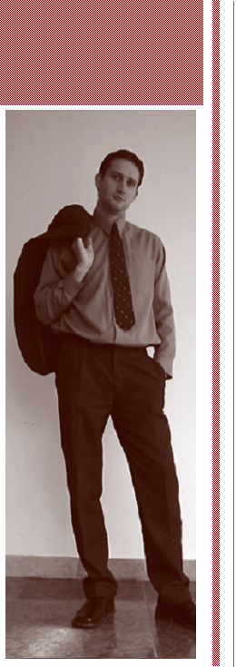

|

|
|
Munkám és magánéletem rugalmasságának köszönhetõen megfordulok akár üzleti, akár magánéleti célból kifolyólag az ország legtávolabbi csücskeiben is. Közösségi ember és kommunikációs szakember lévén sokan vesznek körül, sokfelé ismernek és tisztelnek, megbecsülnek. Fiatalok, idõsek egyaránt. Van, aki a jövõjét, van, aki már az elszalasztott múltját véli felfedezni bennem.
Mindannyian felfigyelnek rám.
Ha Önök stratégiai szempontból is fontosnak tartják, hogy egy, a maga szerteágazó környezetében valóban „bölcsként” és „hõsként” szereplõ személy játsszon „saját közösségének az érzelmi húrjain”, akkor egy személyes találkozó során kérem a lehetõségét egy effajta kommunikációs kampány életre hívásának a részleteirõl való értekezést.
Nem céget, nem érdeket képviselek. Üzleti jellegû terveim a fent leírtakkal nincs. Egy „csendes zenemû a húrokon” viszont a hosszú távú stratégikus gondolkodás szerves részeként jelenhet meg az Önök marketingstratégiájában és cégük hitvallásában.
Tisztelettel várom válaszukat:
Bohár Zsolt
Tel.: +36 70 XX XX XXX
E-mail: bohar.zsolt@xxxxxxxxxx.hu
|
|